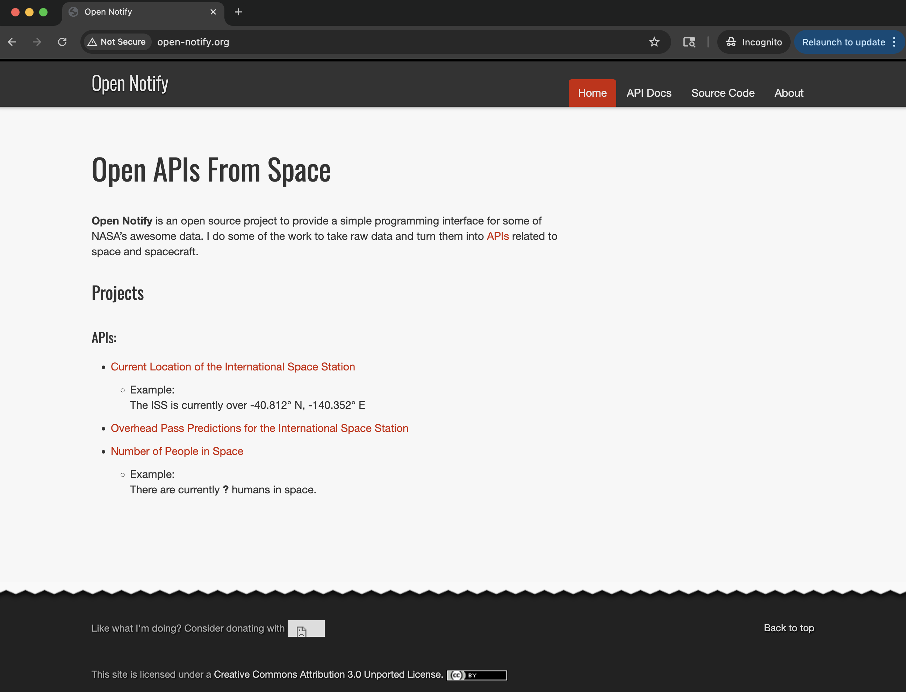
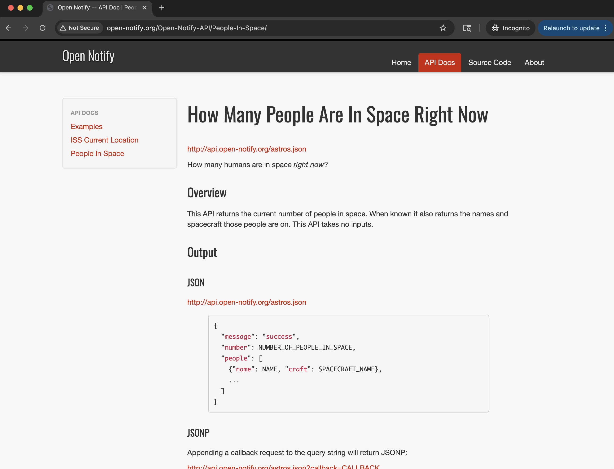
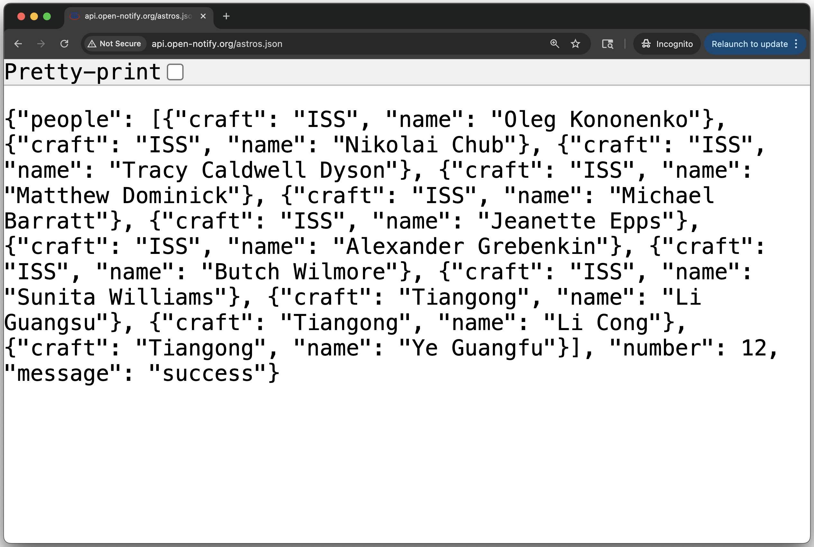
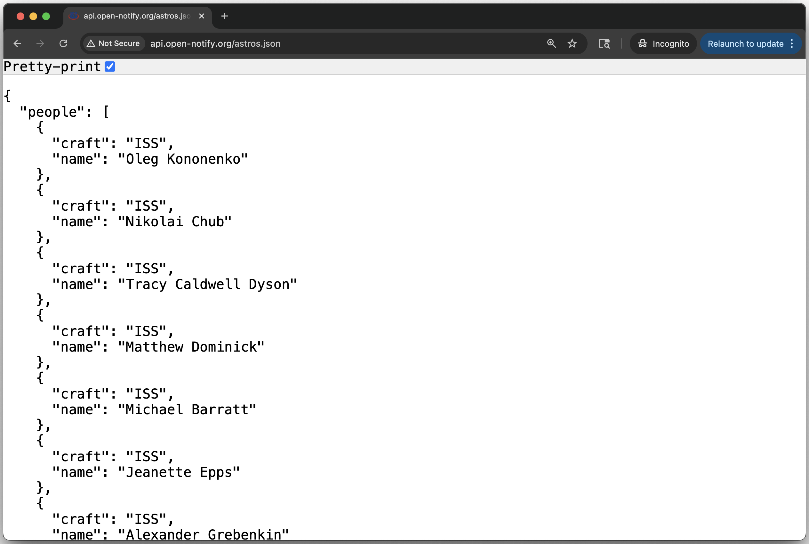
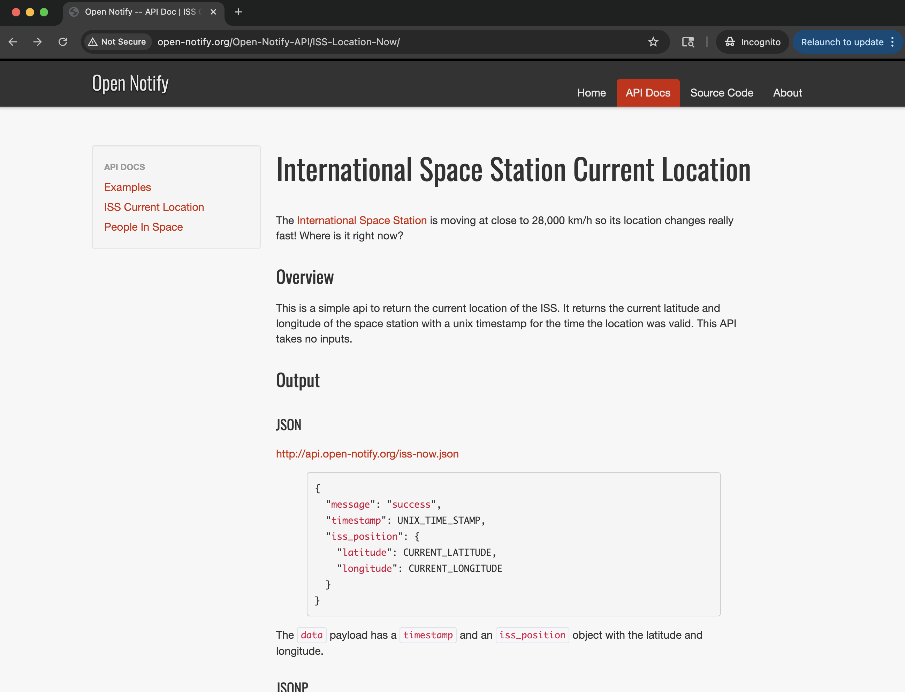
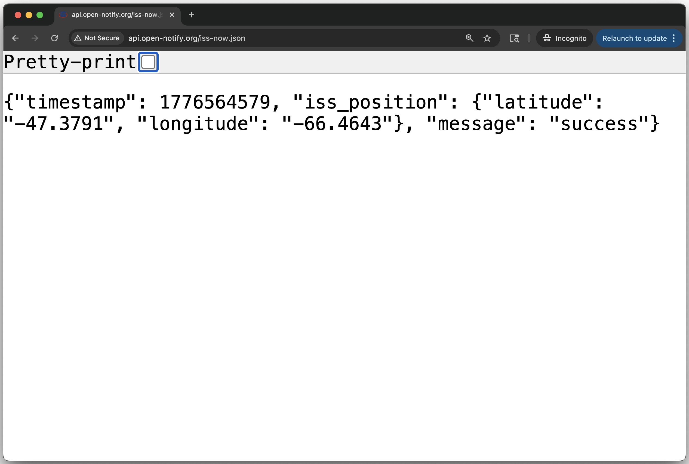
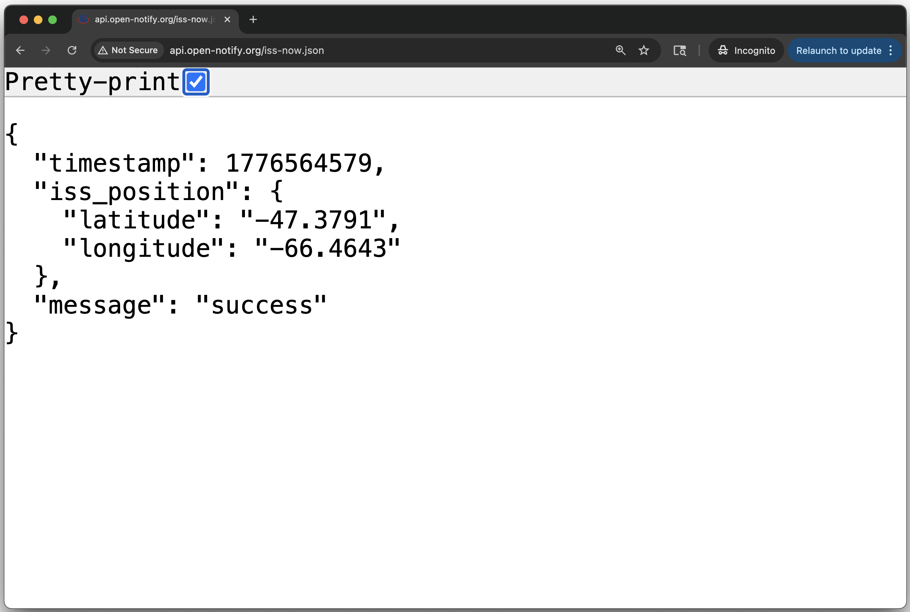
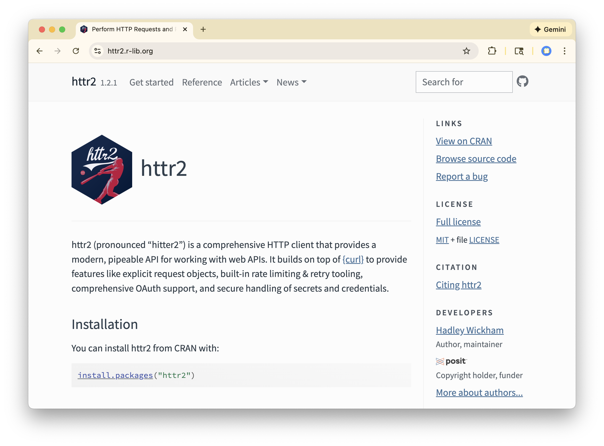

APIs I
Web Technologies
API Example: Open Notify

About Open Notify
Open Notify is an open source project, developed and maintained by Nathan Bergey, to provide a simple application programming interface (API) for some of NASA’s data.
Open Notify’s APIs allow you to make 2 types of requests1:
- Current location of the International Space Station (ISS)
- Number of people in space

Number of people in space
http://api.open-notify.org/iss-now.json



Location of ISS
http://api.open-notify.org/iss-now.json


Interacting with an API
- Web browser: enter URL with parameters to make request.
- Command line: use
curlto make request.
- R or Python: use HTTP libraries to make request.
Interacting with a Browser
Craft URL from a base URL (endpoint) and parameters
http://api.open-notify.org/iss-now.json
Interacting from Command Line
Most shells have curl command for making HTTP requests.
{"timestamp": 1776564579, "iss_position": {"latitude": "-66.4643", "longitude": "-47.3791"}, "message": "success"}Interacting from R (option 1 quick & dirty)1
$timestamp
[1] 1776564579
$iss_position
$iss_position$longitude
[1] "-47.3791"
$iss_position$latitude
[1] "-66.4643"
$message
[1] "success"Interacting with APIs through HTTP Libraries
Interacting from R (option 2 more formal)
Use an HTTP library, e.g. "httr2"

Interacting from R (option 2 more formal)
Open Notify’s ISS location:
Create a request object with
request(), this define your base request.Complete the full path, via
req_url_path_append(), by appending the JSON file name.Submit request with
req_perform().Extract data with
resp_body_json()
Interacting from R (option 2 more formal)
<httr2_response>
GET http://api.open-notify.org/iss-now.json
Status: 200 OK
Content-Type: application/json
Body: In memory (112 bytes)[1] "method" "url" "status_code" "headers" "body"
[6] "request" "cache" Interacting from R (option 2 more formal)
$timestamp
[1] 1776564579
$iss_position
$iss_position$longitude
[1] "-47.3791"
$iss_position$latitude
[1] "-66.4643"
$message
[1] "success""httr2" is the modern standard for API interaction in R. It treats the API request as a conversation.
Pros:
API-First: Built specifically for modern web requirements like OAuth, API keys, and custom headers.
Pipe-friendly: Works with
|>(e.g.,request(url) |> req_perform()).Robust: It has built-in features for retrying failed requests, rate-limiting, and pausing between calls.
Informative: It gives you easy access to HTTP status codes.
Cons:
Dependency: Requires installing the package.
Learning curve: Slightly more complex for a simple one-off file download.